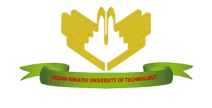

Annonce des subventions pour les ensembles de données d’apprentissage machine sur le climat et les forêts
29 October 2024
Annonce des subventions pour les ensembles de données d’apprentissage machine sur le climat et les forêts
En 2023, le Lacuna Fund a lancé son premier appel à propositions sur le climat et les forêts dans son domaine d’action consacré au Climat. Aujourd’hui, nous avons le plaisir d’annoncer les 14 lauréats qui ont reçu un financement pour créer des ensembles de données dans ce domaine. L’appel a été rendu possible par un financement du programme « FAIR Forward – Artificial Intelligence for all » (FAIR Forward – L’intelligence artificielle pour tous) de la GIZ pour le compte du ministère fédéral allemand de la Coopération et du Développement économiques (BMZ).
Ces équipes travailleront à la création d’ensembles de données d’apprentissage machine pour faire progresser les travaux menés dans le domaine de la sylviculture visant à comprendre le changement climatique, à atténuer ses effets et à s’y adapter. Des îles Galapagos au bassin du Congo, ces projets couvrent une grande variété de régions et de contextes forestiers. Ils portent sur le changement de l’occupation des sols et la déforestation, les conflits entre l’homme et la faune, le financement de la lutte contre le changement climatique, les crédits carbone et bien d’autres choses encore ! Dans les contextes de revenus faibles et intermédiaires partout dans le monde, l’efficacité de l’utilisation de l’apprentissage machine est entravée par le manque de données de terrain. Nous sommes ravis que les bénéficiaires du Lacuna Fund en Afrique, en Amérique latine et en Asie du Sud et du Sud-Est contribuent à combler ces lacunes et à développer des ensembles de données d’entraînement et d’évaluation ouverts et accessibles.
Nous tenons également à saluer et à remercier notre Groupe consultatif technique sur le climat et les forêts 2023N et les examinateurs partenaires pour leur travail d’analyse des riches candidatures et de sélection d’un portefeuille diversifié de projets à financer : Darlington Akogo, Jackson Efitre, Meryl Cohen, Praveen Mokkapati, Rebecca Ryakitimbo, Swetha Kolluri, Tara O’Shea, Vishwas Chitale. Pour en savoir plus sur les membres du GCT Climat et Forêts.
Poursuivez votre lecture pour en apprendre davantage sur ces équipes et les ensembles de données qu’elles constituent !
Le Lacuna Fund est une coalition de bailleurs de fonds, de scientifiques et d’utilisateurs de données, dont la Fondation Rockefeller, Google.org, le Centre de recherche pour le développement international du Canada, le ministère fédéral allemand de la Coopération et du Développement économiques (BMZ), Wellcome, la Fondation Gordon et Betty Moore, la Fondation Patrick J. McGovern et la Fondation Robert Wood Johnson, qui s’engagent à combler les lacunes en matière de données et à rendre l’apprentissage machine et l’IA plus équitables, plus précis et plus accessibles dans le monde entier.

Ensemble de données d’apprentissage machine pour l’Équateur continental et les Galápagos
Contact : Carmen Josse | carmenjosse@ecociencia.org
Cette équipe utilisera les données existantes pour créer un nouvel ensemble de données de classification de l’occupation des sols pour l’Équateur continental et les îles Galápagos, qui pourra être utilisé pour entraîner des modèles multispectraux d’apprentissage machine pour l’observation de la Terre. L’équipe entend créer un ensemble de données composé de 30 000 points, couvrant une superficie totale de 257 215,3 kilomètres carrés. L’ensemble de données fournira des informations sur les catégories d’utilisation/d’occupation des sols (20 types) et sur l’état de conservation (c’est-à-dire la présence ou l’absence dans une zone protégée et/ou un territoire indigène), pour la période allant de 1985 à 2022.
Cet ensemble de données permettra de mieux comprendre la dynamique du changement de l’occupation des sols, telle que la conversion des forêts en monoculture d’huile de palme, la transformation des mangroves en aquaculture de crevettes, les masses d’eau et la végétation estuarienne affectées par l’exploitation minière, les prairies naturelles envahies par l’expansion des plantations forestières, et bien d’autres facteurs. Il permettra également de recenser les cas de réhabilitation. Par exemple, les données des îles Galápagos pourraient permettre d’estimer si les programmes de lutte contre les espèces envahissantes ont eu un impact positif sur la régénération de la végétation ou si les incitations forestières gouvernementales favorisent bel et bien la réduction de la déforestation en Amazonie équatorienne. L’état de conservation des sols permet de prédire le risque de transformation future.
« Les tendances de l’occupation et de l’utilisation des sols dans le temps sont essentielles pour comprendre l’état de la couverture naturelle restante et les tendances de changement. Mais la compréhension des facteurs de changement de l’utilisation/l’occupation des sols ayant une pertinence locale s’avère compliquée lorsque l’on travaille avec les ensembles de données existants à l’échelle mondiale. Le soutien du Lacuna Fund nous permettra de créer un ensemble de données précises qui renforcera notre capacité à distinguer les classes d’occupation des sols à la fois temporelles et spatiales. Ce financement permettra également de disposer d’une couche supplémentaire de données pour soutenir les projets visant à réduire la pression sur les forêts existantes et à préserver les systèmes socio-naturels qui ont réussi à empêcher la régression des forêts due aux activités anthropiques. »
– Wagner Holguín, Coordinateur de MapBiomas Ecuador, Fundación Ecociencia

Séquestration du carbone par les forêts dans le bassin du Congo : combiner les données in situ et l’intelligence artificielle pour débloquer le financement de la lutte contre le changement climatique
Contact : Kendie Kenmoe | kkenmoe@wri.org et Nancy Harris | nancy.harris@wri.org
Les forêts jouent un rôle important dans l’atténuation du changement climatique, mais il est difficile d’évaluer les effets du changement climatique sur la dynamique du carbone forestier en raison du manque de données d’inventaire sur les forêts claires et de modèles de croissance forestière spécialement calibrés pour l’Afrique centrale. La capacité des gouvernements à accéder au financement de la lutte contre le changement climatique s’en trouve donc limitée. Pour y remédier, ce projet procédera à une nouvelle mesure de 65 parcelles échantillonnées sur le terrain dans les forêts de la République démocratique du Congo (RDC) et du Cameroun. Les données recueillies sur ces parcelles seront fusionnées dans une base de données regroupant plus de 2 millions de parcelles répertoriées dans le monde entier et utilisées pour entraîner et valider un modèle de croissance forestière basé sur l’IA géospatiale. Les cartes produites dans le cadre de ce projet illustreront la dynamique passée, actuelle et future de la répartition des espèces d’arbres, les espèces dominantes et les changements correspondants en matière de séquestration du carbone forestier, de biodiversité et de qualité du bois au fil du temps.
Toutes les données de terrain et les cartes seront en libre accès, approuvées par les ministères concernés et intégrées dans les Atlas forestiers nationaux du World Resources Institute (Institut des ressources mondiales) pour la RDC et le Cameroun. Les données peuvent être utilisées pour définir des niveaux de référence crédibles et localement pertinents des forêts qui peuvent débloquer le « plus » du financement carbone disponible de l’initiative REDD+, en permettant une gestion durable des forêts et une augmentation des stocks de carbone forestier. En renforçant l’équité de l’accès aux données, qui augmentera le financement de la lutte contre le changement climatique pour les solutions basées sur la nature dans les régions qui en ont le plus besoin, ce projet améliorera les résultats en matière de climat et de forêts.
« À l’heure où le bassin du Congo s’impose comme le plus important puits de carbone de la forêt tropicale et l’un des points sensibles de la biodiversité dans le monde, il est plus urgent que jamais de comprendre et de surveiller sa dynamique si nous voulons atteindre les objectifs en matière de climat et de biodiversité à l’horizon 2030. Avec le soutien du Lacuna Fund, notre projet permettra de mettre l’apprentissage machine au service des scientifiques qui travaillent sur le terrain pour surveiller cet écosystème. Il pilotera des technologies innovantes afin de combler les lacunes en matière de connaissances et d’accélérer les actions visant à mieux gérer ces forêts tropicales, garantissant ainsi un monde meilleur pour les populations, la nature et le climat. »
— Teodyl Nkuintchua, Responsable de la stratégie et de l’engagement pour le bassin du Congo et Directeur national pour la République du Congo, World Resources Institute Africa
Projet Ltome-Katip (projet « Éléphant-Rat ») : étiquetage par des autochtones pour une IA inclusive dans la lutte contre les conflits entre l’homme et la faune et le changement climatique
Contact : Diana Mastracci Sanchez | diana@space4innovation.com
Ce projet est une initiative novatrice visant à générer des données étiquetées par des autochtones pour l’apprentissage machine et l’IA. Dirigé par la Namunyak Wildlife Conservancy, Space4Innovation et la station biologique indigène de Musap – avec la participation du peuple Shuar en Amazonie équatorienne et de la tribu Samburu dans le nord du Kenya – ce projet répond au besoin urgent de données étiquetées par des autochtones pour l’apprentissage machine. En collaboration avec le Rochester Institute of Technology et la GEO Indigenous Alliance, le projet se concentre sur des régions fortement affectées par le changement climatique, à savoir la forêt amazonienne et le nord du Kenya. L’équipe a pour mission de révolutionner les approches adoptées en matière de conflits entre l’homme et la faune et de résilience face au changement climatique.
En impliquant activement les communautés autochtones dans la collecte de données, l’étiquetage et l’élaboration de cartes, l’équipe comblera des lacunes importantes dans la compréhension du changement climatique, des conflits entre l’homme et la faune, ainsi que du boisement et de la déforestation. Cette collaboration permet non seulement de sauvegarder une biodiversité inestimable et de préserver l’identité autochtone, mais aussi de donner aux communautés les moyens d’agir, en leur proposant des solutions efficaces et adaptées à leur culture. En combinant les connaissances autochtones et les technologies de pointe, l’équipe sera en mesure d’améliorer concrètement la vie des populations et de la faune dans ces régions vitales, tout en réduisant les biais et l’incertitude des modèles d’IA.
« Grâce à la combinaison des connaissances autochtones et des technologies de pointe, le projet Ltome-Katip permet non seulement de relever des défis environnementaux et techniques urgents en matière d’apprentissage machine, mais aussi de donner aux communautés autochtones les moyens de jouer un rôle moteur dans les efforts de conservation. Cette initiative, menée en collaboration avec le Rochester Institute et Space4Innovation, représente un véritable partenariat entre la tribu Shuar de l’Amazonie équatorienne et la tribu Samburu du nord du Kenya, et témoigne du pouvoir de la collaboration et du savoir autochtone dans la sauvegarde de la biodiversité de notre planète. »
— Mario Vargas Shakaim (Shuar), projet de surveillance dirigé par les autochtones Ltome-Katip, GEO Indigenous Alliance
Ensemble de données sur la biomasse en Afrique : mesures in situ de la biomasse dans trois mangroves de Côte d’Ivoire
Contact : Therence Temfack | therence.temfack@data354.co
Les mangroves jouent un rôle essentiel dans la résilience face au changement climatique, notamment en ce qui concerne la séquestration du carbone. Ce projet permettra de collecter des données lors de missions sur le terrain dans diverses mangroves de Côte d’Ivoire, et de les étiqueter avec la biomasse et les stocks de carbone correspondants. Ces données de terrain seront associées aux images satellite correspondantes afin de développer un modèle d’IA capable d’estimer à distance la biomasse et le stock de carbone au-dessus et au-dessous du sol. Ce projet contribuera à la protection et à l’expansion de ces forêts en facilitant l’accès aux crédits carbone et autres paiements pour des services environnementaux.
« En ce qui concerne le suivi et le calcul des stocks de carbone forestier, il subsiste un goulet d’étranglement technologique majeur qui bloque le développement à grande échelle des crédits de carbone forestier en Côte d’Ivoire et qui doit être surmonté rapidement. La télédétection est un outil utile dans le processus de surveillance des forêts ; des études complémentaires devraient être menées pour lui permettre de répondre aux besoins d’évaluation à plus petite échelle et de mesurer directement la biomasse. Nous pourrons ainsi aider les décideurs à orienter leurs politiques de conservation, mais aussi soutenir le processus de récompense des petits acteurs, tels que les producteurs agricoles impliqués dans l’agroforesterie, les forêts privées, etc. Grâce aux fonds collectés, notre objectif est de fournir des données pratiques de terrain pour mieux entraîner les algorithmes d’intelligence artificielle à la cartographie dynamique de la biomasse forestière et des mangroves. »
— Abraham Bio, Directeur général d’Actum Dev

Collecte de données de référence pour améliorer la cartographie des changements de l’occupation des sols au Ghana
Contact : Foster Mensah | fkmawusi@gmail.com
Cet ensemble de données permettra d’entraîner et de valider des applications basées sur l’apprentissage machine afin d’améliorer la cartographie du cacao et des forêts, ainsi que d’autres occupations et utilisations des sols importantes dans la région. L’équipe entreprendra une vaste campagne de collecte de données sur le terrain dans la région méridionale du Ghana où l’on cultive le cacao. Les plantations de cacao ne sont pas facilement repérables aux fins de l’annotation, même sur des images à haute résolution ; elles nécessitent une vérification sur le terrain pour que des ensembles de données de référence fiables puissent être créés. Le manque de données de référence librement accessibles limite la capacité de surveillance de ce facteur et d’autres facteurs clés de la déforestation en Afrique de l’Ouest.
Dirigé par le Centre for Remote Sensing and Geographic Services (CERSGIS ou Centre de télédétection et de services d’information géographique), avec le soutien de chercheurs de l’International Crops Research Institute for the Semi-Arid Tropics (ICRISAT ou Institut international de recherche sur les cultures des zones tropicales semi-arides), de l’université de Boston et de l’université de l’Alabama à Huntsville par le biais de SERVIR Afrique de l’Ouest et du réseau SERVIR Global, ce travail s’appuiera sur des partenariats locaux solides pour impliquer les jeunes et les membres de la communauté dans la collecte de données et le renforcement des capacités. Avec le soutien du Partenariat pour les données forestières, ces données contribueront à réduire la déforestation liée aux produits de base et à accélérer la restauration des terres dégradées.
« Nous sommes extrêmement reconnaissants au Lacuna Fund et nous sommes ravis que notre effort de collecte de données de référence contribue grandement à un écosystème de données en constante évolution pour mettre en place des applications évolutives d’apprentissage machine pour le suivi des changements d’occupation des sols dans les paysages de mosaïque cacaoyers-forêts. Dirigé par le Centre de télédétection et de services d’information géographique (CERSGIS), avec le soutien des chercheurs du Centre for Climate Change and Sustainability Studies (Centre d’études sur le changement climatique et la durabilité) de l’université du Ghana, de l’Institut international de recherche sur les cultures des zones tropicales semi-arides (ICRISAT), de l’université de Boston et de l’université de l’Alabama à Huntsville par le biais de SERVIR Afrique de l’Ouest et du réseau SERVIR Global, ce travail s’appuiera sur les connaissances locales des jeunes et des membres de la communauté pour la collecte participative de données basée sur la science. Ces données fourniront des informations essentielles pour faciliter la transformation de la traçabilité de la chaîne d’approvisionnement axée sur les produits de base et offrir des débouchés commerciaux pour la durabilité de l’écosystème. »
— Foster Mensah, Center for Remote Sensing and Geographic Information Services, université du Ghana
Un ensemble intégré de données combinant la télédétection, les mesures au sol et les données météorologiques pour un meilleur suivi du reboisement
Contact : Ciira Maina | ciira.maina@dkut.ac.ke
Cette équipe collectera un ensemble de données d’images aériennes haute résolution capturées par des drones, de mesures sur le terrain de certains paramètres des arbres et de données météorologiques globales d’une grande zone reboisée au Kenya. Ces données permettront de mettre au point des outils capables d’évaluer rapidement le succès des initiatives de reboisement en permettant le comptage des arbres, l’estimation des paramètres biophysiques des arbres à partir d’images de drones et la prédiction de la croissance des arbres en fonction des espèces concernées et des variables météorologiques.
« Les outils basés sur l’apprentissage machine ont la capacité d’aider à surveiller les efforts de reboisement en Afrique et nous sommes convaincus que l’ensemble de données que nous allons collecter contribuera à ces efforts. Nous espérons également que cet ensemble de données favorisera la mise au point de nouvelles méthodes dans le domaine important de la conservation de l’environnement. »
— Prof. Ciira Maina, Centre for Data Science and Artificial Intelligence, Dedan Kimathi University of Technology.
Ensemble de données pour des solutions basées sur l’intelligence artificielle afin de prédire les changements d’occupation et d’utilisation des sols en Ouganda
Contact : Sarah Akello | sarahakellok1@gmail.com
La déforestation contribue de manière significative aux changements dans l’utilisation/l’occupation des sols. Ce phénomène est d’autant plus important que l’agriculture est extrêmement vulnérable au changement climatique. Les parties prenantes se tournent de plus en plus vers l’intelligence artificielle pour faciliter la prise de décision en matière de gestion des ressources naturelles. Ce projet entend donc générer des ensembles de données d’imagerie satellite et d’inventaire forestier national accessibles et de qualité pour l’Ouganda. Ces ensembles de données seront utilisés pour prédire les types d’occupation des sols ou les changements au niveau de celle-ci afin de prendre des décisions éclairées en matière de gestion des ressources naturelles. Cette recherche utilisera les ensembles de données d’imagerie satellitaire Sentinel 2 et du couvert arboré et les complétera par des ensembles de données d’inventaire. En partenariat avec l’Autorité nationale des forêts de l’Ouganda, l’équipe du projet entend compiler les ensembles de données d’images de Sentinel 2 et du couvert forestier de Hansen. Un ensemble de données sur le stock moyen de biomasse par hectare pour chaque type de végétation sera également constitué. Les procédures d’annotation des différents ensembles de données seront menées plus avant afin de réaliser chaque tâche d’apprentissage machine prévue.
« Grâce au financement du Lacuna Fund, les images satellite et les ensembles de données d’inventaire forestier permettront de développer des modèles d’apprentissage machine pour prédire les types d’occupation des sols ou leurs changements, afin de prendre des décisions éclairées en matière de gestion des ressources naturelles. Dans le cadre d’une recherche conjointe du Makerere College of Agriculture and Environment Studies et du Makerere AI Health Lab, et en partenariat avec l’Autorité nationale des forêts de l’Ouganda, nos ensembles de données sur l’utilisation/l’occupation des sols et les changements intervenus à ce niveau amélioreront notre compréhension de la relation entre les changements d’utilisation/d’occupation des sols et le changement climatique. Cela sera également utile pour orienter les pratiques et les politiques sur la meilleure façon de gérer les différents scénarios possibles. »
— Dr Sarah Akello, Collège de l’agriculture et des sciences de l’environnement, université de Makerere
Les arbres africains au service de la résilience face au changement climatique : une approche bio-informatique complète
Contact : Guy Franklin Midgley | gfmidgley@sun.ac.za
Les arbres sont des éléments structurels importants des forêts, des fourrés et des savanes d’Afrique australe. Ils soutiennent les moyens de subsistance de millions d’Africains, aujourd’hui menacés par le changement climatique. Ce projet développera une vaste ressource bio-informatique qui exploitera les caractéristiques médicinales, alimentaires et autres des différentes espèces d’arbres, ainsi que les relations climatiques et les caractéristiques de croissance des arbres d’Afrique australe aux fins de l’adaptation au changement climatique et de la planification de l’atténuation de ses effets. Les données sur les espèces d’arbres – notamment celles provenant de la base de données internationale Global Biodiversity Information Facility (GBIF ou Système mondial d’information sur la biodiversité) et du programme Botanical Information and Ecology Network (BIEN ou Réseau d’information botanique et écologique) – ainsi que les données sur l’utilisation des sols, le climat, la géologie et le sol, seront rassemblées pour définir les niches biogéoclimatiques des espèces d’arbres de l’Afrique australe.
L’application principale de ce travail consistera à identifier les espèces indigènes qui peuvent renforcer la résilience écologique en cartographiant les possibilités d’adaptation et d’atténuation et en évaluant les risques climatiques qui pèsent sur les arbres africains. La modélisation des niches fonctionnelles existantes permettra de repérer les zones d’utilisation optimale des arbres africains sur la base des résultats de la croissance des arbres. Cela permettra de promouvoir l’utilisation d’arbres indigènes pour le reboisement, l’agriculture régénératrice, la restauration écologique, la santé humaine et le soutien aux moyens de subsistance, ainsi que les programmes de boisement urbain afin de s’adapter au changement climatique et d’en atténuer les effets.
« Nous sommes ravis que le Lacuna Fund ait donné à Stellenbosch et à notre équipe la possibilité d’utiliser ces ensembles de données pour permettre aux chercheurs de modéliser l’impact des arbres indigènes sur l’adaptation au changement climatique et l’atténuation de ses effets en Afrique australe. Ces informations sont de la plus haute importance pour que le continent puisse renforcer sa résilience face à l’évolution rapide du changement climatique, qui affecte les moyens de subsistance et exige que nous trouvions des solutions. »
— Professeur Guy Midgley, Directeur par intérim de la School for Climate Studies, université de Stellenbosch

Le carbone bleu en Afrique occidentale : exploiter les ensembles de données pour mieux comprendre le lien entre la santé des mangroves et le changement climatique
Contact : Romain Glèlè Kakaï | glele.romain@gmail.com ou romain.glelekakai@fsa.uac.bj
Les mangroves sont des écosystèmes côtiers précieux, qui fournissent divers services à l’homme et jouent un rôle essentiel dans la stratégie mondiale visant à atténuer les effets du changement climatique. Un suivi régulier de leur état s’avère essentiel pour étayer des décisions opportunes concernant leur gestion. Pourtant, des données de terrain exhaustives et à long terme sur la biodiversité, la structure, les conditions environnementales, les contextes socioculturels et les services écosystémiques des mangroves font cruellement défaut. Or, ces données permettraient de déterminer les facteurs clés contribuant à la santé des mangroves, d’alimenter les plateformes d’IA et d’AM qui génèrent des connaissances précieuses, et de guider des stratégies de conservation efficaces. Le projet « Benin Mangroves Open Data (BeMOD) » générera 500 images annotées, 1 920 observations sur la qualité de l’eau, 1 920 observations sur les caractéristiques du sol, 10 800 observations climatiques, des données d’inventaire forestier (diversité des arbres, hauteur et couverture de la canopée, diamètre des arbres, hauteur totale, biomasse, etc.) à partir de 600 parcelles, et des données sur les contextes socioculturels (par exemple, utilisations, activités) des mangroves dans 20 sites au Bénin. Le projet portera sur les sites Ramsar 1017 et 1018 qui sont des zones où les mangroves sont confinées au Bénin. Cet ensemble de données sera librement accessible sur diverses plateformes de données ouvertes, mais sera également utilisé pour rédiger des articles scientifiques qui contribueront à améliorer les connaissances actuelles sur les mangroves en Afrique occidentale.
« Le financement de notre projet par le Lacuna Fund contribuera à générer l’un des ensembles de données ouverts les plus complets sur les mangroves en Afrique occidentale, améliorant ainsi le partage et l’utilisation des connaissances au niveau local, régional et mondial sur cet écosystème essentiel aux fins de sa gestion durable. »
— Romain Glèlè Kakaï, Laboratoire de biomathématiques et d’estimations forestières, Faculté des Sciences agronomiques, université d’Abomey-Calavi, République du Bénin

Faire progresser la cartographie des palmiers à huile en Indonésie grâce à la foresterie sociale et à l’apprentissage machine
Contact : Peter Cutter | peter.cutter@recoftc.org
Ce projet entend améliorer la compréhension et l’atténuation des impacts de la culture du palmier à huile sur les forêts et le changement climatique, soutenir les pratiques de gestion durable des forêts et renforcer les capacités des communautés locales en matière de gestion des ressources forestières. Le projet créera des ensembles de données d’entraînement et d’évaluation ouverts et accessibles pour les applications d’apprentissage machine axées sur le couvert forestier et son évolution en Indonésie. Les ensembles de données contiendront des séries de polygones d’occupation des sols uniformes, avec des étiquettes indiquant le type d’occupation et, éventuellement, des informations sur l’évolution de cette occupation des sols dans le temps. Pour étiqueter les parcelles d’occupation des sols, l’équipe examinera les images satellite haute résolution grâce à l’outil Collect Earth Online (CEO) et à des visites sur le terrain dans les zones difficiles à classer. Ces résultats profiteront aux communautés locales engagées dans la foresterie communautaire en Indonésie, ainsi qu’aux chercheurs, aux décideurs politiques et aux organisations de la société civile.
« Les communautés des régions ciblées par ce projet ont des difficultés à cartographier les paysages forestiers en constante évolution dont elles dépendent. Les ensembles de données générés par ce projet fourniront des informations précieuses sur ces modèles dynamiques de changement. »
— Gamma Galudra, Directeur, bureau national d’Indonésie, RECOFTC
Système de surveillance numérique inclusif dans l’Himalaya oriental
Contact : Michael Anthony | michael@vertify.earth
L’Himalaya indien est un point sensible de la biodiversité et de la conservation des forêts, confronté à des pressions démographiques, à l’expansion de l’agriculture et au développement des infrastructures qui entraînent la déforestation. En outre, l’Himalaya joue un rôle essentiel dans la régulation du climat et des ressources en eau, et assure la subsistance de millions de personnes. Les organisations de conservation telles que la Fondation Balipara entendent surveiller de manière systématique l’impact des efforts de conservation et cartographier les zones propices à de nouvelles interventions de restauration.
Dans le cadre de ce projet, Vertify.earth et Alsisar Impact, tous deux basés à Mumbai, mettront au point un outil de surveillance, de notification et de vérification (de l’anglais « Monitoring, Reporting and Verification » ou MRV), qui appréciera les principales tendances en matière de dégradation et de conservation des écosystèmes de l’Himalaya. L’outil s’appuiera à la fois sur des données géospatiales (provenant des capteurs optiques, radar et LIDAR) et sur des données recueillies sur le terrain par de jeunes villageois regroupés en cellules autochtones mises en place par des partenaires locaux. Les jeunes de ces cellules, guidés par l’équipe scientifique de Balipara et les universités locales, procéderont à la collecte de données sur le terrain. Ils se concentreront sur la collecte de paramètres cruciaux relatifs à la biodiversité et aux forêts qui permettront de calibrer les données géospatiales. Cet ensemble de données sera traité, stocké et publié selon les principes du SpatioTemporal Asset Catalog (STAC). Les données existantes seront également normalisées en vue de se conformer à ces normes.
« Le Lacuna Fund contribuera à soutenir le développement d’un système MRV qui nous permettra de cartographier de manière participative la santé des forêts dans la région biodiversifiée de l’Himalaya oriental avec les communautés autochtones, facilitant ainsi des interventions ciblées pour la résilience face au changement climatique par le biais de la gestion des forêts, au bénéfice de millions de personnes qui dépendent des forêts pour leur vie et leurs moyens de subsistance dans l’Himalaya oriental. »
— Michael Dawson, Rural Futures – Visionnaire anthropologique, Fondation Balipara

Agro4resilience : les données au service de l’absorption des chocs climatiques et de la résilience des écosystèmes par l’agroforesterie
Contact : Dr Elfaith M. Abdel-Rahman | eabdel-Rahman@icipe.org
Le Centre international de physiologie et d’écologie des insectes (ICIPE), grâce au généreux soutien du Lacuna Fund, a le plaisir d’annoncer une initiative importante visant à améliorer la sécurité alimentaire, la nutrition et la durabilité environnementale au Kenya. Les systèmes agroforestiers jouent un rôle essentiel dans la réalisation de ces objectifs en atténuant les effets du changement climatique et en créant des bénéfices financiers par le biais des marchés du bois et du carbone. Cependant, au vu des défis posés par les évaluations du marché du carbone, l’échantillonnage spatial et les exercices de cartographie, il est urgent de disposer d’informations précises concernant la localisation et la configuration des systèmes agroforestiers au Kenya. Pour y remédier, ce projet collectera et publiera de nombreuses données en libre accès sur les systèmes agroforestiers. L’équipe recueillera des données sur un minimum de 20 000 points d’utilisation des sols répartis sur quatre transects dans les zones agro-écologiques du Kenya, soit 35 des 47 comtés du pays. Dans une zone d’échantillonnage de 200 hectares, nous procéderons à une identification minutieuse des espèces d’arbres, en mesurant la hauteur et le diamètre à hauteur de poitrine (DHP) pour un total de 15 000 plants individuels. Chaque plant sera échantillonné, photographié et géolocalisé.
Afin de soutenir le renforcement des capacités, l’équipe prévoit de former au moins 20 personnes à l’identification des arbres et à la collecte de données sur les quatre transects. En outre, au moins un représentant de chaque gouvernement de comté (au moins 37 personnes) recevra une formation sur l’accès à ce précieux ensemble de données et sur son utilisation. Le projet prévoit de faire participer la communauté en organisant 40 discussions de groupe ciblées, avec un minimum de huit participants dans chaque groupe (dont 50 % de femmes). Ces discussions permettront de recueillir des données sur les préférences en matière de systèmes agroforestiers, les rôles des hommes et des femmes et l’implication des jeunes dans les systèmes agroforestiers, en garantissant un étiquetage clair et interopérable de ces informations.
L’objectif de l’équipe est de créer un ensemble de données robuste, prêt pour l’apprentissage machine, qui permettra d’approfondir l’analyse et la modélisation à l’aide d’algorithmes d’apprentissage machine. Ces données permettront d’optimiser les systèmes agroforestiers, d’améliorer l’identification des espèces et d’évaluer la séquestration du carbone. Enfin, nous collaborerons étroitement avec le gouvernement kényan, par l’intermédiaire de l’Institut de recherche forestière du Kenya (KEFRI), ainsi qu’avec l’université de Strathmore au Kenya, afin de garantir une gestion responsable et durable des systèmes agroforestiers dans l’intérêt de tous.
« Le projet Agro4Resilience, financé par le Lacuna Fund, offre aux agriculteurs et aux décideurs kényans un moyen de prendre des décisions éclairées en faveur de l’augmentation du couvert arboré. Il permettra également d’améliorer la productivité agricole et d’atténuer les effets du changement climatique grâce aux services rendus par les écosystèmes. »
— David Makori, Centre international de physiologie et d’écologie des insectes (ICIPE)
Quantification de la biomasse et du carbone aériens des mangroves colombiennes
Contact : Maria Cuevas-Gonzalez | maria.cuevas@cttc.es
Ce projet a pour ambition de développer un ensemble de données complet composé de données de terrain, de données obtenues par des véhicules aériens sans pilote et de données de télédétection pour une estimation précise de la biomasse aérienne et du carbone aérien dans les mangroves des Caraïbes colombiennes. La zone pilote se trouve dans le parc naturel national Via Parque Isla de Salamanca (VIPIS), situé dans le département de Magdalena, dans les Caraïbes colombiennes. VIPIS est une zone protégée qui fait partie du marais Ciénaga Grande de Santa Marta (CGSM), déclaré site Ramsar d’importance internationale en 1998 et réserve de biosphère par l’UNESCO en 2000 (Moreno-Bejarano & Alvarez-Leon, 2003 ; UNESCO, 2001). VIPIS se caractérise par la présence de vastes forêts de mangroves qui servent d’habitat à de nombreuses espèces et qui fournissent des services écosystémiques précieux. Toutefois, au cours des dernières décennies, le parc VIPIS a été endommagé par l’intervention humaine, qui a entraîné la déforestation, réduisant ainsi sa capacité à capturer et à stocker le carbone et modifiant le régime écologique de l’écosystème. Bien que certaines études aient permis d’estimer la biomasse aérienne et le carbone aérien au niveau mondial, y compris au niveau du CGSM, la modélisation doit être mise en œuvre avec une plus grande précision et un meilleur rapport coût-efficacité.
Cet ensemble de données intégrera les données de terrain existantes ainsi que les nouvelles données de terrain et de drones collectées spécifiquement pour ce projet, en se concentrant sur les paramètres structurels des arbres dans les parcelles d’échantillonnage réparties dans la zone pilote. L’ensemble de données alimentera les applications d’apprentissage machine, permettant le développement de modèles robustes pour l’estimation de la biomasse aérienne et du carbone aérien à l’aide d’images satellite. En combinant les données de terrain et les informations de télédétection, cette étude entend améliorer la précision et l’efficacité de l’estimation de la biomasse aérienne et du carbone aérien dans la zone étudiée. Par ailleurs, une analyse statistique sera effectuée pour évaluer les relations entre les paramètres mesurés sur le terrain et ceux obtenus par les techniques de télédétection. Cet ensemble de données facilitera l’estimation précise de la biomasse aérienne et du carbone aérien dans les mangroves des Caraïbes colombiennes, ce qui permettra de mieux comprendre le stockage du carbone et de soutenir les efforts de conservation et de gestion. Il constituera également une ressource précieuse pour les futures activités de recherche et de surveillance liées à ces importants écosystèmes côtiers.
« L’ensemble de données compilé au cours du projet facilitera l’estimation précise de la biomasse aérienne et du carbone aérien dans les mangroves des Caraïbes colombiennes, ce qui permettra de mieux comprendre le stockage du carbone et de soutenir les efforts de conservation et de gestion. Il constituera également une ressource précieuse pour les futures activités de recherche et de surveillance liées à ces importants écosystèmes côtiers. En outre, la méthode mise au point dans le cadre de ce projet pourrait même être appliquée au-delà des Caraïbes colombiennes à d’autres écosystèmes de mangrove présentant des structures similaires. »
— María Cuevas-González, Unité de recherche en géomatique, Centre Tecnològic de Telecomunicacions de Catalunya (CTTC)
Ensemble de données phénologique pour la prévision écologique (projet PheDEF)
Contact : Bismark Ofosu-Bamfo | bismark.ofosu-bamfo@uenr.edu.gh
La santé des écosystèmes forestiers tropicaux est mise à mal par le changement climatique, qui menace l’approvisionnement durable en feuilles, fleurs et fruits, qui sont des ressources importantes pour la faune, les animaux domestiques et les établissements humains. Ce projet vise à surveiller et à fournir des données sur la chronologie des événements du cycle de vie des végétaux (phénologie) au Ghana, en Afrique de l’Ouest, à partir de sources multiples afin de suivre la disponibilité des ressources végétales et la façon dont elle est affectée par la variabilité du climat. Cet ensemble de données s’appuie sur une collecte antérieure de données sur la phénologie des lianes, plantes grimpantes ligneuses, à partir d’observations sur le terrain dans deux écosystèmes forestiers tropicaux (une forêt humide à feuilles semi-caduques et une forêt sèche à feuilles semi-caduques) et sera élargi pour inclure la phénologie des arbres, la phénologie des espèces sur la base des connaissances écologiques traditionnelles des communautés locales et l’utilisation de caméras de suivi (phénocams) et d’images satellite.
Les données phénologiques provenant de sources multiples seront combinées avec les données climatiques locales (précipitations, température, humidité relative et rayonnement solaire) pour créer un ensemble de données harmonisé prêt pour l’apprentissage machine qui peut être utilisé pour prédire la phénologie à l’échelle de la communauté et du paysage. Cet ensemble de données améliorera la représentation des forêts tropicales africaines dans la recherche sur la phénologie et fournira des données importantes sur les forêts tropicales africaines pour les applications d’apprentissage machine dans les domaines du climat, des forêts et de la conservation de la biodiversité. L’apprentissage machine a atteint un certain niveau de stabilité et d’efficacité. Toutefois, des données systématiquement recueillies sont encore nécessaires pour formuler de bonnes prévisions écologiques à l’aide de méthodes d’apprentissage machine.
« La menace du changement climatique sur la santé des forêts affecte la disponibilité des ressources en feuilles, en fleurs et en fruits, mais nous ne pouvons pas nous y préparer si nous ne disposons pas de données adéquates ayant un pouvoir prédictif. Avec le soutien du Lacuna Fund, nous avons là une formidable occasion de créer un ensemble de données harmonisé prêt pour l’apprentissage machine destiné aux prévisions écologiques. Ces prévisions pourraient servir de base à un système d’alerte précoce qui aiderait les communautés et les gestionnaires de ressources à mieux planifier et préparer l’impact du changement climatique sur les ressources forestières. »
— Bismark Ofosu-Bamfo, Département des sciences biologiques, University of Energy and Natural Resources (Université de l’énergie et des ressources naturelles)